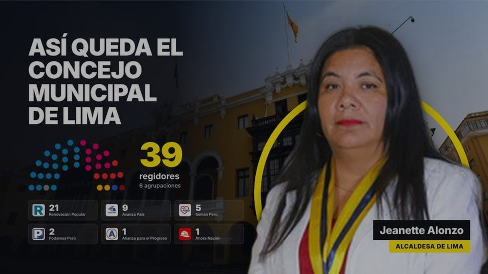
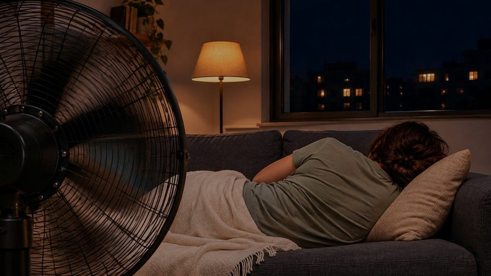
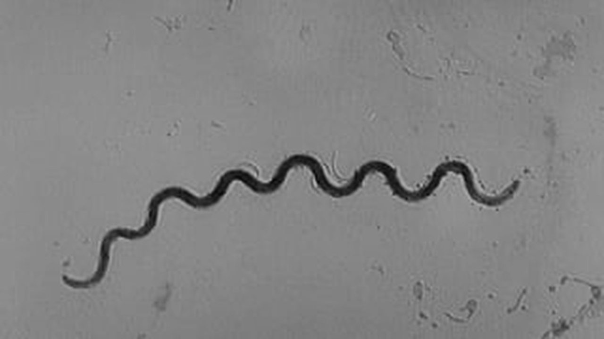

Primero, Perú pierde lugar en Miss Universo 2026. En contexto, perú quedó fuera del Top 12 de Miss Universo 2026 porque Luren Márquez no calificó.
![China lanzó la misión Shenzhou-24 rumbo a su propia estación espacial [FOTOS]](assets/ediciones/2026-11-25-decima-edicion.jpg)








Primero, Perú pierde lugar en Miss Universo 2026. En contexto, perú quedó fuera del Top 12 de Miss Universo 2026 porque Luren Márquez no calificó.
También, Juegos de videojuegos sobrepasan citas entre peruanos. En contexto, los peruanos priorizan jugar GTA VI antes de salir con citas según Infobae.
También, Perú corre riesgo de perder título de libre de sarampión. En contexto, el país podría perder su certificación de transmisión endémica del sarampión.
Primero, China lanzó la misión Shenzhou-24 rumbo a su propia estación espacial [FOTOS]. En contexto, china lanzó la misión Shenzhou-24 rumbo a su propia estación espacial [FOTOS]. Según RPP Noticias, China lanzó la misión Shenzhou-24 rumbo a su propia estación espacial [FOTOS] RPP Noticias.
También, Dólar repunta a máximos de 6 meses por desplome del cobre: ¿romperá los S/ 3.50?. En contexto, dólar repunta a máximos de 6 meses por desplome del cobre: ¿romperá los S/ 3.50?. Según Gestión, Dólar repunta a máximos de 6 meses por desplome del cobre: ¿romperá los S/ 3.50? GestiónDólar hoy en Chile: cotización de apertu
También, Minas Pamputa vs Cajabamba (25/11/2026). En contexto, minas Pamputa vs Cajabamba (25/11/2026). Según Flashscore.pe, Minas Pamputa vs Cajabamba (25/11/2026) Flashscore.pe.
Primero, Alcaldesa de Lima 2027-2030: Jeanette Alonzo proclamada. En contexto, la ciudad de Lima festejó la proclamación de Jeanette Alonzo como alcaldesa para el periodo 2027-2030.
También, Proyecto VyV en Lince: de un grifo a 28 pisos. En contexto, el antiguo grifo Primax será sustituido por un moderno edificio de 28 pisos en Lince.
También, Instagram niega uso de micrófono para anuncios. En contexto, la plataforma rechaza que escuche conversaciones a través del micrófono para mostrar publicidad personalizada.
Cada edición dura menos de dos minutos. En la web tienes el resumen de cada historia y el enlace directo al medio original para leerla completa.
Conoce Olfatecho →